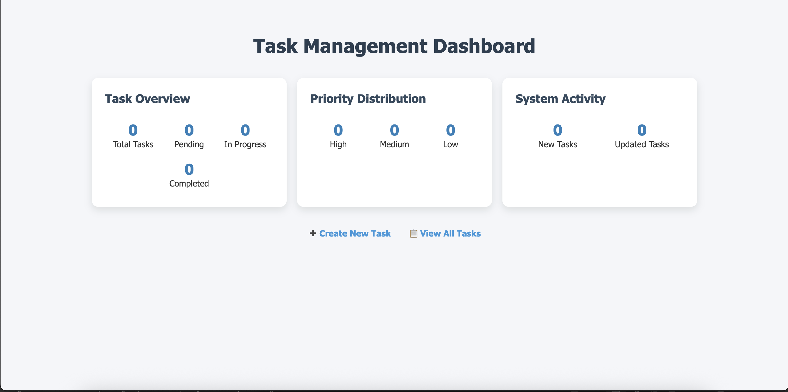
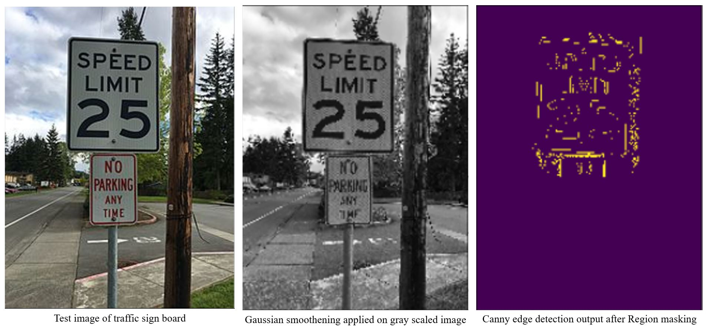

A collection of my work, showcasing my skills and creativity in software development.
The Task Management System is built using Flask, Redis, and Docker. It allows users to create, update, delete, and query tasks, as well as view task statistics on a dashboard. The system is designed to be modular, with separate services for task creation, querying, updating, and a dashboard for analytics.
- Task Creation: Create new tasks with attributes like title, description, priority, due date, and status.
- Task Querying: View all tasks, filter tasks by status or priority, and delete all tasks.
- Task Updating: Update task details or delete individual tasks.
- Dashboard: View task statistics, including total tasks, status distribution, and priority distribution.
- Microservices Architecture: Each service (creation, query, update, dashboard) runs independently and communicates via APIs.
- Redis Integration: Tasks are stored in Redis for fast and efficient data access.
- Dockerized Deployment: All services are containerized using Docker for easy deployment and scalability.
 View ProjectThe Traffic Sign Recognition system is developed using Python, TensorFlow, and OpenCV. It is designed to identify and classify traffic signs from images or video streams, aiding in autonomous driving and traffic analysis.
- Image Preprocessing: Utilizes OpenCV for resizing, normalization, and augmentation of input images.
- Deep Learning Model: Employs a Convolutional Neural Network (CNN) built with TensorFlow for accurate sign classification.
- Dataset: Trained on the German Traffic Sign Recognition Benchmark (GTSRB) dataset for robust performance.
- Real-Time Detection: Capable of recognizing traffic signs in real-time video streams.
- Application: Useful for autonomous vehicles, driver assistance systems, and traffic monitoring solutions.
 View Project